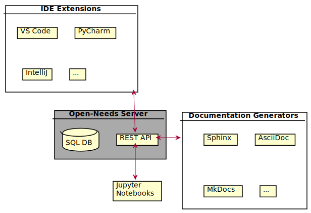

Status: Concepts under development
Open-Needs Concepts#
Open-Needs is a tool collection for docs-as-code based projects. It allows to create and maintain objects like requirements or specifications in tools like Sphinx, AsciiDoctor, MkDocs and more.
It’s main goal is to provide the functionality of Sphinx-Needs in a framework-independent way for all docs-as-code related tools.
This documentation describes the concept and current ideas of Open-Needs, which realization starts in 2022.
User manuals or details of implementation can be found in the documentation of the related tool/extensions.
Open-Needs is funded from March-September 2022 by the Prototype Fund of the Federal Ministry of Education and Research.

|
Concept summary#
In this scenario Open-Needs is only used during build time of the documentation.
The Open-Needs client must be written in the programming language of the documentation framework (e.g. Java). But as the Open-Needs Server is written in Python, there is a language independent REST API used for communication.
The goal is that the user/developer does not even notice that Open-Needs Server is started and stopped during the build.
![@startuml
skinparam nodesep 70
skinparam ranksep 50
artifact "**Documentation files**\n(md, rst, ...)" as docs #6af
card "**Documentation Framework**\n(MkDocs, AsciiDoc, Sphinx, ...)" as df #6af {
card "Parser" as parser
card "Open-Needs Client" as client #6fa {
card "Client specific\ninterface" as interface
card "Open-Needs Server" as on {
cloud "**API**\n(REST based)" as rest
card "**Need functions**:\n*validate\n*calculate\n*filter\n*represent" as func #ccc
database "**Database**\n(SQLite)" as db
rest <=> func
func <=> db
}
card "**Data**:\n<&chevron-left><&chevron-right>needs\n<&chevron-right>filters\n<&chevron-right>configs\n<&chevron-right>functions\n<&chevron-left>tables\n<&chevron-left>images" as data #ccc
}
card "Builder" as builder
}
artifact "**Final documentation**\n(HTML, PDF, ...)" as final #6af
docs ==> parser
parser ==> interface
interface <=> data
data <=> rest
interface ==> builder
builder <==> final
@enduml](_images/plantuml-a40472e7556b644148cc9d638067fd85cf7a9549.svg)
In this scenario there is a central Open-Needs Server server, running 24/7.
This is mostly needed for bigger companies, with strong processes regarding traceability and project steering. It allows to work with the data also outside the documentation context and should support most requirements regarding reporting, measurement and quality assurance.
It is also helpful for the developers, as Open-Needs IDE can be used to assist during the writing of need objects in the documentation. Or by giving access via Open-Needs WebApp, developers are able to dynamically examine and compare content of different projects.
![@startuml
skinparam nodesep 70
skinparam ranksep 50
card IDE as ide {
card "Open-Needs\nIDE extension" as ext #6fa
note right: verifies data,\nprovides previews,\nfollows links
}
artifact "**Documentation files**\n(md, rst, ...)" as docs #6af
card "**Documentation Framework**\n(MkDocs, AsciiDoc, Sphinx, ...)" as df #6af {
card "Parser" as parser
card "**Open-Needs**\n**Client**" as client #6fa
card "Builder" as builder
card "**Data**:\n<&chevron-left><&chevron-right>needs\n<&chevron-right>filters\n<&chevron-right>configs\n<&chevron-right>functions\n<&chevron-left>tables\n<&chevron-left>images" as data #ccc
}
card "**Open-Needs Server**" as on #6fa {
cloud "**API**\n(REST based)" as rest
card "**Need functions**:\n*validate\n*calculate\n*filter\n*represent" as func #ccc
database "**Database**\n(SQL based)" as db
rest <=> func
func <=> db
}
artifact "**Final documentation**\n(HTML, PDF, ...)" as final #6af
card "Web browser" {
card "Open-Needs\nWebApp" as webapp #6fa
note right: Quick analysis\nand comparisons
}
card "Service X" as service {
card "Issue Data" as issue #6fa
note right: Safely integrate\nexternal data
}
ext .[#333]l.> docs: supports \nduring writing
docs ==> parser
parser ==> client
client <=> data
data <=> rest
client ==> builder
builder ==> final
rest .[#333]u..> ext
rest .[#333]d..> webapp
rest .[#333]d..> issue
@enduml](_images/plantuml-8451648cc4df5b14102d7371c3102af470ae9fe9.svg)
Motivation#
Open-Needs is based on ideas and wishes coming from the Open-Source project Sphinx-Needs, which provides the possibility to create and maintain need-objects inside the docs-as-code tool Sphinx.
A need in a documentation looks like this:
I’m a need-object, or better a Requirement. You can set all kind of meta-data and link me to other need-objects. Click the small “arrow” above to see the meta-data. Also filtering and presentation in tables, list and multiple types of charts is supported out-of-the-box. Need-objects are great to fulfill traceability requirements, which are often requested in safety relevant projects, like for the automotive or aerospace industry. |
.. req:: Show Need-Example
:id: REQ_001
:status: open
:tags: example, open-needs
:collapse: True
I'm a **need**-object, or better a Requirement.
You can set all kind of meta-data and link me to other **need**-objects.
Click the small "arrow" above to see the meta-data.
Also filtering and presentation in tables, list and multiple types of charts is supported out-of-the-box.
**Need**-objects are great to fulfill traceability requirements, which are often requested in safety relevant
projects, like for the automotive or aerospace industry.
In professional documentations there are often thousands of these need-objects, used to handle information for Requirement Engineers, SW architects, SW developers, Test engineers or Quality and Process experts.
Problem#
The definition of need-objects are done by writing textual files in the rst format. And a later Sphinx-Build creates objects out of this definitions, sets attributes and links and generates needed tables and charts. The result is a PDF or HTML documentation, which represents the current status only.
So all information is technical only available during the build itself. The capabilities to support the user during writing of need-objects are very limited. E.g. checks, if a used status name is allowed, or if the used Id is really unique, are not possible.
Also historical data is not easily accessible. It is stored in the source-code repository and only accessible if a build is executed for this specific “point in time”.
Another problem is that Sphinx-Needs can only be used with Sphinx. No AsciiDoc or MkDocs support. It would be nice, if the idea of Sphinx-Needs could be easily used in other documentation-generators, without the need to reimplement the same ideas and concepts.
The following flow chart illustrates how the current workflow looks like when using Sphinx-Needs:
![@startuml
card Sphinx as s #6af {
card "Sphinx-Needs" as sn
database "DOM" as dom
card "HTML builder" as builder
artifact "Requirement\nObject" as req_obj
database "Needs\ndictionary" as needs_dict
}
artifact "RST files" as rst {
card "Requirement\nDefinition" as req_def
}
artifact "HTML\ndocumentation" as html
req_def --> sn : 1) read by
sn --> req_obj : 2) creates
req_obj -right-> needs_dict : 3) is stored in
sn <--> needs_dict : 4) interacts\nand updates
sn -> dom: 5) updates
dom -> builder: 6) interpreted\nby
builder -> html: 7) builds
@enduml](_images/plantuml-b67cb319104d5f7d496081b067eea709d1a4f8b4.svg)
Solution#
As solution for the above problems, a Database is planned, which can store all kind of need-objects, separated by project and able to provide all needed information via a REST-API.
The database project is called Open-Needs Server.
Additionally specific interfaces shall be created, to make the database features and data available for different documentation-generators like AsciiDoc or MkDocs. Sphinx-Needs will be also updated to support Open-Needs Server in advance to its own, internal storage format.
The following flow chart illustrates how the upcoming workflow looks like when using Sphinx-Needs and Open-Needs Server:
![@startuml
card "Open-Needs Server" as db #6fa{
card "REST API" as rest
database "SQL DB" as sql
}
card Sphinx as s #6af {
card "Sphinx-Needs" as sn
database "DOM" as dom
card "HTML builder" as builder
}
artifact "Requirement\nObject" as req_obj
artifact "RST files" as rst {
card "Requirement\nDefinition" as req_def
}
artifact "HTML\ndocumentation" as html
req_def --> sn : 1) read by
sn --> req_obj : 2) creates
req_obj --> rest : 3) is send to
rest <-> sql : 4) interacts
rest -> sn: 5) provides\n final data
sn -> dom: 6) updates
dom -> builder: 7) interpreted\nby
builder --> html: 8) builds
@enduml](_images/plantuml-3466f436df6390982c7e059ce4e51ddeae72a195.svg)
Goals#
There are three main goals for Open-Needs:
Technology independent data access.
100% server-side feature implementation
Small & fast, but scalable
Technology independent access#
A mostly technology independent data access is the most important goal for Open-Needs. For sure there must be a single API interface technology (REST), but as all modern programming languages are able to communicate with a REST-API, Open-Needs can be accessed by tools written in Python, Java, C, JavaScript and more.
And even the type of the “tool” is not defined. It can be a documentation generator like AsciiDoc. Or an extension for VS Code. Or a web interface. Or an Excel reader. It simply shall not matter.
Open-Needs is open to every type of tooling.

100% server-side#
Maintaining a feature twice, but in different programming language, is hard, annoying and a good way to mess up everything.
Therefore Open-Needs tries to provide its features all server-side, so that the different interface like Sphinx-Needs can be kept as dumb as possible.
Small & fast, but scalable#
The main scenario for Open-Needs is to be started and stopped during a single documentation build, using a local database (like sqlite). That would already allow to use all documentation related features.
For bigger projects, with maybe hundreds of developers, a common data storage provides some benefit. So Open-Needs shall also be able to be executed on a powerful server, running 24/7 and handling hundreds of parallel requests.
Use cases#
The idea of Open-Needs was born due the needs from the below use cases in projects, which are already using Sphinx-Needs in bigger, industry driven environments.
Single source of truth#
As a docs-as-code approach often includes a code versioning system like git, there are multiple instances of
information:
The master / main branch
Branches on the git server
Local development branches
Tags
And any single point in time, referenced by a commit id
Manual documentation copies (source and built versions)
In this setup, it is hard to identify, which “version” of a need-object is the latest one or which is valid.
A single server shall provide a “home” for all kind of “information versions” and allow to mark specific versions as “official and validated”.
Data history#
It is often important to track the progress in terms of quality and quantity of a project.
With a “docs-as-code” approach, this information is available, but stored inside the git history as source code. So to get the needed information, a documentation build must be executed for each needed point in time.
Open-Needs shall be able to store historical data and provide needed metrics about it.
Multi source support#
Currently Sphinx-Needs supports need objects creation during a Sphinx build only.
This means all imports or dynamic need object creations mechanisms are controlled inside a Sphinx documentation only. There are ways to import e.g. Jira tickets, github issues and other sources, but this needs to be done during each build, which can become a huge problem, if the documentation is changed by dozens of engineers with hundreds of daily builds. The needed amount of requests against the source system would be much too big.
The Open-Needs Server shall provide ways to import data from external sources only once and share it with each developer / documentation build.
IDE / Dev support#
The documentation gets often written inside the same IDE / editor , which is also used for developing the final product.
While there are often IDE extensions available, which support the syntax of certain documentation frameworks, there is no support available to deal with need objects.
But there are some cases, where a support would be really helpful:
Knowing if a need id is already taken.
Knowing the allowed values for a field like status.
Following links to other needs.
Seeing a preview of a referenced link.
Searching for need objects without building the documentation.
All the above can be given, if the need objects are available by an open API.
Comparison / Proposals#
Nowadays software is often reusing existing code, provided in libraries or copied from older projects. Therefore already existing need objects can be helpful to describe the required need objects for the current project. Also taking a look into need objects of similar projects may help to write better requirements or specifications.
The Open-Needs Server will have all this information and by providing IDE extensions, this information can be used to write better need objects faster.
Technical concept#
The following pages describe the ideas and concepts for a technical realisation. They may not be up to date for all details, but they should be a good starting point to understand the general setup.
For details about usage and configuration, please take a look into the related project documentation.
Discussion#
For ideas and discussions going into details, please create a specific ticket on our github project.
For any other short information, feel free to add a comment.